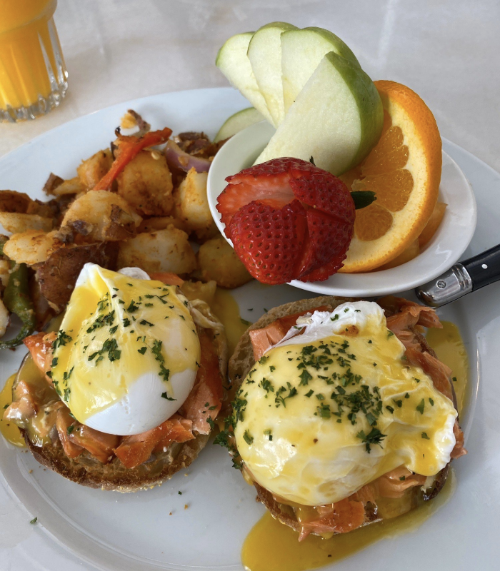
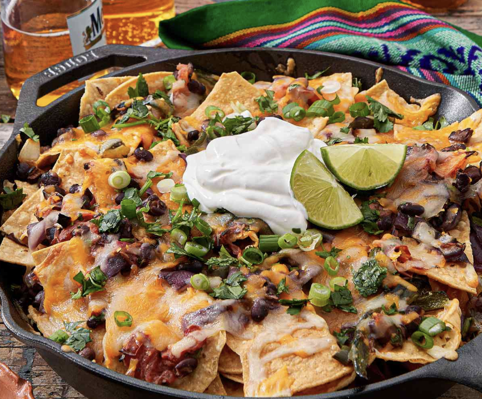
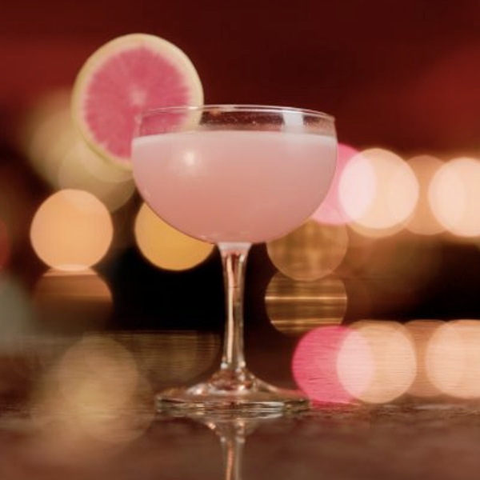

Where to Eat in Ventura
From cozy coffee shops to lively dinner restaurants and night cocktail bars, Ventura has something for everyone. Here are a few local favorites.

Breakfast & Coffee
- Simone's Coffee: Handcrafted drinks and welcoming vibes.
- Café Ficelle: French-inspired pastries.
- Frontside Café: Fresh breakfast and quality espresso.
- Pete's Breakfast House: A local morning staple.

Lunch & Dinner
- Luke's on Main: Elevated comfort food.
- Fluid State: Craft beer and artisan pizza.
- Rumfish y Vino: Caribbean coastal flavors.
- Yard Bar & Grill: Casual post-beach dining.

Drinks
- Jaguar Moon: Stylish creative cocktails.
- Ten Tigers: Popular local nightlife spot.
- Ventiki Lounge: Tropical tiki cocktails.
Food Overview
| Restaurant | Category | Atmosphere |
|---|---|---|
| Simone's Coffee | Breakfast & Coffee | Cozy & Casual |
| Café Ficelle | Breakfast & Coffee | Charming & European-inspired |
| Luke's on Main | Lunch & Dinner | Modern & Lively |
| Fluid State | Lunch & Dinner | Craft Beer & Social |
| Jaguar Moon | Drinks | Trendy Cocktail Lounge |
| Ventiki Lounge | Drinks | Tropical & Fun |